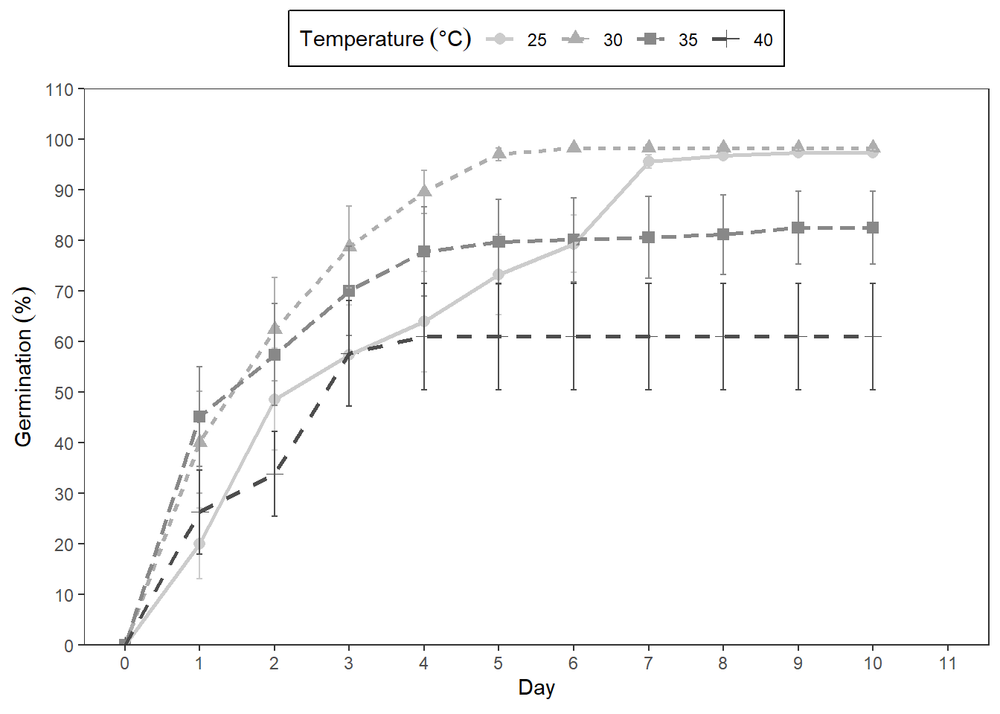

5 GerminaR: data analysis with code
Analysis for the germination experiment can follow a routine. The functions will de explain according to the data set included in the GerminaR package (“prosopis”).
- Install and load the GerminaR package. Load the “prosopis” dataset on your session. In case of using another dataset, you can load your own data and proceed according to the following script:
# Install packages and dependencies
library(GerminaR)
library(tidyverse)
library(knitr)
# load data
fb <- prosopis %>%
dplyr::mutate(across(c(nacl, temp, rep), as.factor))
# Prosopis data set
fb %>%
head(10) %>%
kable(caption = "Prosopis dataset loaded")| rep | nacl | temp | seeds | D0 | D1 | D2 | D3 | D4 | D5 | D6 | D7 | D8 | D9 | D10 |
|---|---|---|---|---|---|---|---|---|---|---|---|---|---|---|
| 1 | 0 | 25 | 50 | 0 | 39 | 8 | 3 | 0 | 0 | 0 | 0 | 0 | 0 | 0 |
| 2 | 0 | 25 | 50 | 0 | 40 | 9 | 1 | 0 | 0 | 0 | 0 | 0 | 0 | 0 |
| 3 | 0 | 25 | 50 | 0 | 34 | 16 | 0 | 0 | 0 | 0 | 0 | 0 | 0 | 0 |
| 4 | 0 | 25 | 50 | 0 | 43 | 7 | 0 | 0 | 0 | 0 | 0 | 0 | 0 | 0 |
| 1 | 0 | 30 | 50 | 0 | 48 | 2 | 0 | 0 | 0 | 0 | 0 | 0 | 0 | 0 |
| 2 | 0 | 30 | 50 | 0 | 47 | 3 | 0 | 0 | 0 | 0 | 0 | 0 | 0 | 0 |
| 3 | 0 | 30 | 50 | 0 | 50 | 0 | 0 | 0 | 0 | 0 | 0 | 0 | 0 | 0 |
| 4 | 0 | 30 | 50 | 0 | 49 | 1 | 0 | 0 | 0 | 0 | 0 | 0 | 0 | 0 |
| 1 | 0.5 | 25 | 50 | 0 | 10 | 37 | 1 | 2 | 0 | 0 | 0 | 0 | 0 | 0 |
| 2 | 0.5 | 25 | 50 | 0 | 18 | 30 | 1 | 1 | 0 | 0 | 0 | 0 | 0 | 0 |
- Calculate the germination indices and perform the ANOVA and the mean comparison tests. The user can generate the graphs, expressing their results, which can be either of bars or lines graphics.
# germination analysis (ten variables)
gsm <- ger_summary(SeedN = "seeds"
, evalName = "D"
, data = fb
)
# Prosopis data set processed
gsm %>%
head(10) %>%
kable(caption = "Function ger_summary performe ten germination indices")| rep | nacl | temp | seeds | grs | grp | mgt | mgr | gsp | unc | syn | vgt | sdg | cvg |
|---|---|---|---|---|---|---|---|---|---|---|---|---|---|
| 1 | 0 | 25 | 50 | 50 | 100 | 1.28 | 0.7812500 | 78.12500 | 0.9461447 | 0.6302041 | 0.3281633 | 0.5728554 | 44.75433 |
| 2 | 0 | 25 | 50 | 50 | 100 | 1.22 | 0.8196721 | 81.96721 | 0.8157272 | 0.6661224 | 0.2159184 | 0.4646702 | 38.08772 |
| 3 | 0 | 25 | 50 | 50 | 100 | 1.32 | 0.7575758 | 75.75758 | 0.9043815 | 0.5559184 | 0.2220408 | 0.4712121 | 35.69788 |
| 4 | 0 | 25 | 50 | 50 | 100 | 1.14 | 0.8771930 | 87.71930 | 0.5842388 | 0.7542857 | 0.1228571 | 0.3505098 | 30.74648 |
| 1 | 0 | 30 | 50 | 50 | 100 | 1.04 | 0.9615385 | 96.15385 | 0.2422922 | 0.9216327 | 0.0391837 | 0.1979487 | 19.03353 |
| 2 | 0 | 30 | 50 | 50 | 100 | 1.06 | 0.9433962 | 94.33962 | 0.3274449 | 0.8848980 | 0.0575510 | 0.2398979 | 22.63188 |
| 3 | 0 | 30 | 50 | 50 | 100 | 1.00 | 1.0000000 | 100.00000 | 0.0000000 | 1.0000000 | 0.0000000 | 0.0000000 | 0.00000 |
| 4 | 0 | 30 | 50 | 50 | 100 | 1.02 | 0.9803922 | 98.03922 | 0.1414405 | 0.9600000 | 0.0200000 | 0.1414214 | 13.86484 |
| 1 | 0.5 | 25 | 50 | 50 | 100 | 1.90 | 0.5263158 | 52.63158 | 1.0844751 | 0.5812245 | 0.3775510 | 0.6144518 | 32.33957 |
| 2 | 0.5 | 25 | 50 | 50 | 100 | 1.70 | 0.5882353 | 58.82353 | 1.1985488 | 0.4800000 | 0.3775510 | 0.6144518 | 36.14422 |
5.1 Punctual analysis of germination
5.1.1 Germination percentage
## Germination Percentage (GRP)
# analysis of variance
av <- aov(formula = grp ~ nacl*temp + rep, data = gsm)
# mean comparison test
mc_grp <- ger_testcomp(aov = av
, comp = c("temp", "nacl")
, type = "snk"
)
# data result
mc_grp$table %>%
kable(caption = "Germination percentage mean comparision")| temp | nacl | grp | std | r | ste | min | max | sig |
|---|---|---|---|---|---|---|---|---|
| 25 | 0 | 100.0 | 0.000000 | 4 | 0.0000000 | 100 | 100 | a |
| 25 | 0.5 | 100.0 | 0.000000 | 4 | 0.0000000 | 100 | 100 | a |
| 25 | 1 | 96.0 | 1.632993 | 4 | 0.8164966 | 94 | 98 | abc |
| 25 | 1.5 | 96.0 | 1.632993 | 4 | 0.8164966 | 94 | 98 | abc |
| 25 | 2 | 94.5 | 2.516611 | 4 | 1.2583057 | 92 | 98 | bc |
| 30 | 0 | 100.0 | 0.000000 | 4 | 0.0000000 | 100 | 100 | a |
| 30 | 0.5 | 100.0 | 0.000000 | 4 | 0.0000000 | 100 | 100 | a |
| 30 | 1 | 98.5 | 1.914854 | 4 | 0.9574271 | 96 | 100 | a |
| 30 | 1.5 | 98.5 | 3.000000 | 4 | 1.5000000 | 94 | 100 | a |
| 30 | 2 | 94.0 | 1.632993 | 4 | 0.8164966 | 92 | 96 | c |
| 35 | 0 | 100.0 | 0.000000 | 4 | 0.0000000 | 100 | 100 | a |
| 35 | 0.5 | 98.0 | 2.309401 | 4 | 1.1547005 | 96 | 100 | ab |
| 35 | 1 | 96.0 | 2.828427 | 4 | 1.4142136 | 92 | 98 | abc |
| 35 | 1.5 | 98.5 | 1.914854 | 4 | 0.9574271 | 96 | 100 | a |
| 35 | 2 | 20.0 | 1.632993 | 4 | 0.8164966 | 18 | 22 | d |
| 40 | 0 | 100.0 | 0.000000 | 4 | 0.0000000 | 100 | 100 | a |
| 40 | 0.5 | 96.0 | 1.632993 | 4 | 0.8164966 | 94 | 98 | abc |
| 40 | 1 | 98.5 | 1.914854 | 4 | 0.9574271 | 96 | 100 | a |
| 40 | 1.5 | 10.5 | 1.914854 | 4 | 0.9574271 | 8 | 12 | e |
| 40 | 2 | 0.0 | 0.000000 | 4 | 0.0000000 | 0 | 0 | f |
# bar graphics for germination percentage
grp <- mc_grp$table %>%
fplot(data = .
, type = "bar"
, x = "temp"
, y = "grp"
, groups = "nacl"
, limits = c(0,150)
, brakes = 30
, ylab = "Germination ('%')"
, xlab = "Temperature (ºC)"
, glab = "NaCl (MPa)"
, legend = "top"
, error = "ste"
, sig = "sig"
, color = F
)
grpFigure 5.1: Germination experiment with Prosopis juliflor under different osmotic potentials and temperatures. Bar graph with germination percentage in a factorial analisys
5.1.2 Mean germination time
## Mean Germination Time (MGT)
# analysis of variance
av <- aov(formula = mgt ~ nacl*temp + rep, data = gsm)
# mean comparison test
mc_mgt <- ger_testcomp(aov = av
, comp = c("temp", "nacl")
, type = "snk")
# data result
mc_mgt$table %>%
kable(caption = "Mean germination time comparison")| temp | nacl | mgt | std | r | ste | min | max | sig |
|---|---|---|---|---|---|---|---|---|
| 25 | 0 | 1.240000 | 0.0783156 | 4 | 0.0391578 | 1.140000 | 1.320000 | j |
| 25 | 0.5 | 1.830000 | 0.0901850 | 4 | 0.0450925 | 1.700000 | 1.900000 | i |
| 25 | 1 | 2.701218 | 0.1512339 | 4 | 0.0756169 | 2.531915 | 2.897959 | g |
| 25 | 1.5 | 5.442365 | 0.0415525 | 4 | 0.0207763 | 5.382979 | 5.479167 | c |
| 25 | 2 | 6.523349 | 0.3068542 | 4 | 0.1534271 | 6.063830 | 6.695652 | b |
| 30 | 0 | 1.030000 | 0.0258199 | 4 | 0.0129099 | 1.000000 | 1.060000 | j |
| 30 | 0.5 | 1.100000 | 0.0432049 | 4 | 0.0216025 | 1.060000 | 1.160000 | j |
| 30 | 1 | 1.898129 | 0.0609184 | 4 | 0.0304592 | 1.833333 | 1.959184 | i |
| 30 | 1.5 | 2.994362 | 0.1138473 | 4 | 0.0569236 | 2.900000 | 3.160000 | f |
| 30 | 2 | 4.388259 | 0.0676715 | 4 | 0.0338357 | 4.326087 | 4.446809 | d |
| 35 | 0 | 1.015000 | 0.0191485 | 4 | 0.0095743 | 1.000000 | 1.040000 | j |
| 35 | 0.5 | 1.076250 | 0.0291905 | 4 | 0.0145952 | 1.060000 | 1.120000 | j |
| 35 | 1 | 1.817607 | 0.2398098 | 4 | 0.1199049 | 1.653061 | 2.173913 | i |
| 35 | 1.5 | 3.370480 | 0.0159689 | 4 | 0.0079844 | 3.354167 | 3.387755 | e |
| 35 | 2 | 6.984343 | 0.3784214 | 4 | 0.1892107 | 6.555556 | 7.400000 | a |
| 40 | 0 | 1.035000 | 0.0191485 | 4 | 0.0095743 | 1.020000 | 1.060000 | j |
| 40 | 0.5 | 2.327648 | 0.0512449 | 4 | 0.0256225 | 2.255319 | 2.375000 | h |
| 40 | 1 | 2.728780 | 0.1714562 | 4 | 0.0857281 | 2.520833 | 2.940000 | g |
| 40 | 1.5 | 3.287500 | 0.1012651 | 4 | 0.0506326 | 3.166667 | 3.400000 | e |
# bar graphics for mean germination time
mgt <- mc_mgt$table %>%
fplot(data = .
, type = "bar"
, x = "temp"
, y = "mgt"
, groups = "nacl"
, limits = c(0,9)
, brakes = 1
, ylab = "Mean germination time (days)"
, xlab = "Temperature (ºC)"
, glab = "NaCl (MPa)"
, legend = "top"
, sig = "sig"
, error = "ste"
, color = T
)
mgtFigure 5.2: Germination experiment with Prosopis juliflor under different osmotic potentials and temperatures. Bar graph for mean germination time in a factorial analisys.
You can add at each plot different arguments as the standard error, significance of the mean test, color, labels and limits. The resulted graphics are performed for publications and allows to insert math expression in the titles.
5.2 Cumulative analysis of germination
The cumulative analysis of the germination allows to observe the evolution of the germination process, being able to be expressed as the percentage of germination or with the relative germination.
5.2.1 In time analysis for NaCl
# data frame with percentage or relative germination in time by NaCl
git <- ger_intime(Factor = "nacl"
, SeedN = "seeds"
, evalName = "D"
, method = "percentage"
, data = fb
)
# data result
git %>%
head(10) %>%
kable(caption = "Cumulative germination by nacl factor")| nacl | evaluation | mean | r | std | min | max | ste |
|---|---|---|---|---|---|---|---|
| 0 | 0 | 0.000 | 16 | 0.0000000 | 0 | 0 | 0.0000000 |
| 0.5 | 0 | 0.000 | 16 | 0.0000000 | 0 | 0 | 0.0000000 |
| 1 | 0 | 0.000 | 16 | 0.0000000 | 0 | 0 | 0.0000000 |
| 1.5 | 0 | 0.000 | 16 | 0.0000000 | 0 | 0 | 0.0000000 |
| 2 | 0 | 0.000 | 16 | 0.0000000 | 0 | 0 | 0.0000000 |
| 0 | 1 | 92.500 | 16 | 9.4516313 | 68 | 100 | 2.3629078 |
| 0.5 | 1 | 57.250 | 16 | 35.5818306 | 12 | 96 | 8.8954576 |
| 1 | 1 | 14.500 | 16 | 12.9099445 | 0 | 40 | 3.2274861 |
| 1.5 | 1 | 0.375 | 16 | 0.8062258 | 0 | 2 | 0.2015564 |
| 2 | 1 | 0.000 | 16 | 0.0000000 | 0 | 0 | 0.0000000 |
# graphic germination in time by NaCl
nacl <- git %>%
fplot(data = .
, type = "line"
, x = "evaluation"
, y = "mean"
, groups = "nacl"
, limits = c(0, 110)
, brakes = 10
, ylab = "Germination ('%')"
, xlab = "Day"
, glab = "NaCl (MPa)"
, legend = "top"
, color = T
, error = "ste"
)
naclFigure 5.3: Germination experiment with Prosopis juliflor under different osmotic potentials and temperatures. Line graph from cumulative germination under different osmotic potentials.
5.2.2 In time analysis for temperature
# data frame with percentage or relative germination in time by temperature
git <- ger_intime(Factor = "temp"
, SeedN = "seeds"
, evalName = "D"
, method = "percentage"
, data = fb)
# data result
git %>%
head(10) %>%
kable(caption = "Cumulative germination by temperature factor")| temp | evaluation | mean | r | std | min | max | ste |
|---|---|---|---|---|---|---|---|
| 25 | 0 | 0.0 | 20 | 0.00000 | 0 | 0 | 0.000000 |
| 30 | 0 | 0.0 | 20 | 0.00000 | 0 | 0 | 0.000000 |
| 35 | 0 | 0.0 | 20 | 0.00000 | 0 | 0 | 0.000000 |
| 40 | 0 | 0.0 | 20 | 0.00000 | 0 | 0 | 0.000000 |
| 25 | 1 | 20.1 | 20 | 31.25094 | 0 | 86 | 6.987922 |
| 30 | 1 | 40.1 | 20 | 45.10327 | 0 | 100 | 10.085399 |
| 35 | 1 | 45.2 | 20 | 44.09750 | 0 | 100 | 9.860501 |
| 40 | 1 | 26.3 | 20 | 37.31671 | 0 | 98 | 8.344270 |
| 25 | 2 | 48.6 | 20 | 45.07818 | 0 | 100 | 10.079787 |
| 30 | 2 | 62.4 | 20 | 45.70662 | 0 | 100 | 10.220310 |
# graphic germination in time by temperature
temp <- git %>%
fplot(data = .
, type = "line"
, x = "evaluation"
, y = "mean"
, groups = "temp"
, limits = c(0, 110)
, brakes = 10
, ylab = "Germination ('%')"
, xlab = "Day"
, glab = "Temperature ('°C')"
, legend = "top"
, color = F
)
tempFigure 5.4: Germination experiment with Prosopis juliflor under different osmotic potentials and temperatures. Line graph from cumulative germination under different temperatures.
5.2.3 In time using ggplot2
As the function fplot() is build using ggplot2 (Wickham et al., 2020). You can add more arguments for modify the graphics using +.
git <- ger_intime(Factor = "temp"
, SeedN = "seeds"
, evalName = "D"
, method = "percentage"
, data = fb
)
ggplot <- git %>%
fplot(data = .
, type = "line"
, x = "evaluation"
, y = "mean"
, groups = "temp"
, limits = c(0, 110)
, brakes = 10
, ylab = "Germination ('%')"
, xlab = "Day"
, glab = "Temperature ('°C')"
, legend = "top"
, color = F
) +
scale_x_continuous(n.breaks = 10
, limits = c(0, 11)
)
ggplot
References
Wickham, H., Chang, W., Henry, L., Pedersen, T. L., Takahashi, K., Wilke, C., Woo, K., Yutani, H., & Dunnington, D. (2020). Ggplot2: Create elegant data visualisations using the grammar of graphics. https://CRAN.R-project.org/package=ggplot2